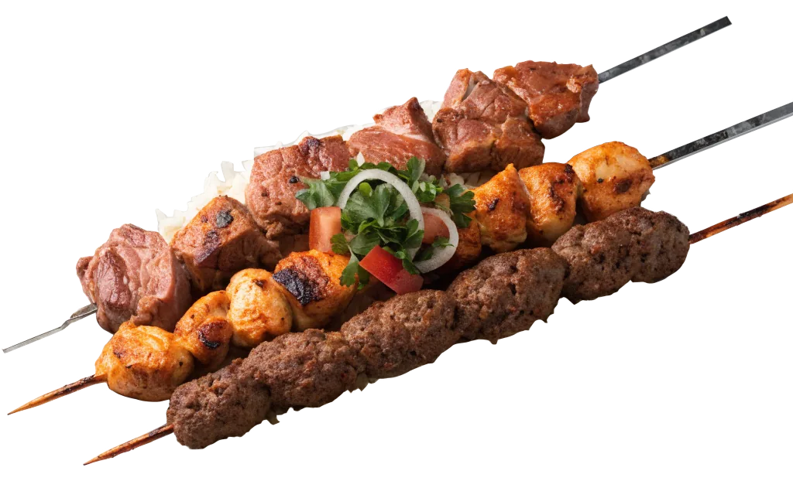
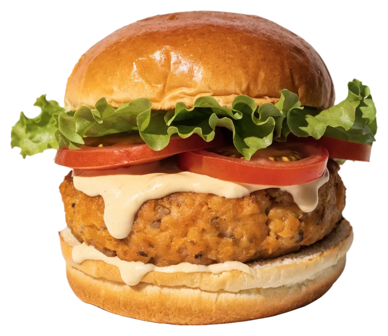

Grill & Schaschlik
- 15Mixed Samarkand SchaschlikPreis vor Ort
- 14Chicken-TandooriPreis vor Ort
- Mix GrilltellerPreis vor Ort


Mo–Fr mittags und abends, Sa abends
Schaschlik, Lamm und Burger – Teller randvoll, mittags und abends in Altona.
Mittags gibt’s Grill, Lamm und Burger von 11:30 bis 15 Uhr – auch zum Mitnehmen. Abends wird bis 22 Uhr gegessen, drinnen an den langen Tischen oder draußen vor der Tür.
Der Mixed-Schaschlik kommt mit Reis, Gemüse und Salat, und der Teller ist voll.


Gastraum: Foto: Steffen P. Walther · Google Maps · Grillplatte: Foto: Sheryar Butt · Google Maps

01
Nummer 15 auf der Karte: mehrere Spieße auf einem Teller, dazu Reis, Gemüse und Salat.
02
Lammstücke in cremiger Spinat-Sahne-Sauce. Mittags wie abends auf der Karte.

03
Gemüse-Patty, Salat, Tomate, Sauce. Wer Fleisch will: Cheeseburger und Hamburger stehen gleich daneben.
Hier stehen die Gerichte, die wir sicher kennen. Die ganze Karte mit allen Nummern und Preisen liegt am Tisch aus – am Telefon unter 040 8903228 lesen wir sie gern vor.
 Foto: Svenja Hagert · Google Maps
Foto: Svenja Hagert · Google MapsDazu Bier vom Fass, Wein und Kaffee. Die Desserts stehen auf der Karte am Tisch.
 Foto: Raju Edla · Google MapsFoto: Sergey Lazarev · Google MapsFoto: Svenja Hagert · Google MapsFoto: Sheryar Butt · Google Maps
Foto: Raju Edla · Google MapsFoto: Sergey Lazarev · Google MapsFoto: Svenja Hagert · Google MapsFoto: Sheryar Butt · Google Maps
Steaks, Hackfleischspieße, Reis, Gemüse und Salat. Für große Runden lieber vorher anrufen.
Foto: Raju Edla · Google Maps Foto: Hossein · Google Maps
Foto: Hossein · Google MapsMontag bis Freitag zweimal am Tag, samstags nur abends, sonntags Ruhetag. Die türkise Linie zeigt, wie spät es gerade ist.
Mo–Fr mittags und abends, Sa abends
Altona, Richtung Bahrenfeld. Hausnummer 2 in der Notkestraße – vor der Tür stehen bei gutem Wetter die Tische draußen.
Route in Google MapsSagen Sie uns Tag, Uhrzeit und wie viele Sie sind. Wir melden uns, falls etwas nicht passt.
4,5645 Bewertungen auf GoogleFoto: Steffen P. Walther · Google MapsMittags Mo–Fr, abends bis 22 Uhr, sonntags Ruhetag.
Mo–Fr mittags und abends, Sa abends